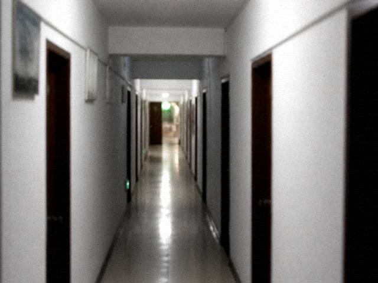

DouPi (2008): Backstage tour my ass. I got written in as Extra. Thread still on the Teahouse.
MaJu (2009): Out-of-town number went into the book. Money got refunded. That row did not get painted out. Don't ask me what happened after.
Local: WhitePlay is the one people watch. NightPlay is for outsiders. Two different things.
WuChuang staff reply: For refunds see ticket-page status. CurtainUp already. Cannot refund. Repeat inquiries will not be answered.
The Teahouse mirror is still open. Enter from here: Huaixi Teahouse. Site desk says updates stopped. Threads remain.
Open Huaixi Teahouse
Guestbook review memo. Xiao Yan added it August 2014. WuChuang had it printed as footer so she would not answer one by one.
Possession, exorcism, missing-person: those three types get hidden as soon as they show. Hidden, no reason written. Write a reason and somebody argues whether it is feudal. DouPi's 2008 line, MaJu's 2009 line. We asked publicity. Old Zhou said keep them. Old posts as a mirror. Saves people saying we covered it up. WuChuang's work-number reply is one sentence: for refunds see ticket-page status, CurtainUp already cannot refund, repeat inquiries get no reply. She copied that from the work order. Copied it forty-eight times. Forty-ninth time still that sentence. An east-wing guest wrote a phone number into comments, then called to have it deleted. Number was already on the travel list. List goes to the troupe. This window can delete the page. Cannot delete the list. Teahouse mirror still opens. Link is DouPi's own backlink, not a Tourism friendship link. Friendship-link column stopped in 2012. Stopped and still occupies a cell. The local line WhitePlay is the one for people to watch I did not hide. Hide it and townspeople come shout at the window. They shouted once, because NightPlay pulled down the Flagstone Street lantern wire. Fu Sheng spliced the wire later. Splice looks bad. Still lights. This board does not fix typos. Typos were written by people who left comments. 2011 had an ad comment, selling potency pills, link and a phone. Hidden. Hiding it clipped a porridge-and-pickles question by mistake. That question was put back later. Person who asked did not come back. Review is one person. Night shift is Xiao Yan refreshing. Hit a repeat CurtainUp already, one WuChuang line is enough. Do not @ the window again. This page is not live chat.